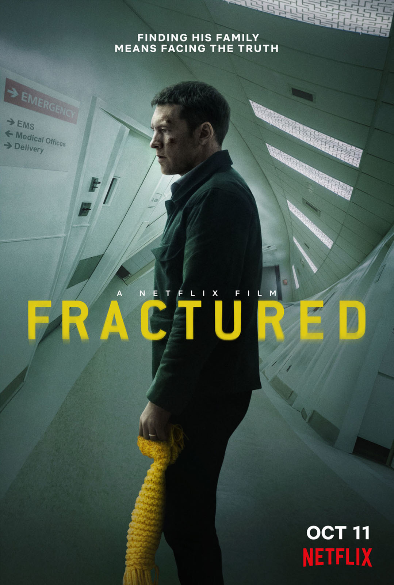

Filmes
Trailers
Trilha Sonora
Contato
Sobre
Fratura

Diretor:
Brad Anderson
Com:
Sam Worthington, Lily Rabe, Stephen Tobolowsky, Adjoa Andoh, Shane Dean, Lauren Cochrane
Gênero:
Suspense
Censura:
12 anos
Tempo de Duração:
1h40min
Sinopse:
Dirigindo pelo país, Ray (Sam Worthington), sua esposa e filha param em uma área de descanso da estrada, onde a filha cai e quebra o braço. Depois de uma corrida frenética para o hospital e um confronto com a enfermeira, Ray finalmente consegue ser atendido. Enquanto a esposa e a filha descem para uma ressonância magnética, Ray, exausto, desmaia em uma cadeira no saguão. Ao acordar, eles descobrem que não têm nenhum registro no hospital, como se nunca tivessem passado por lá.